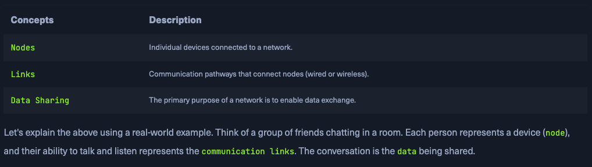

4 minutes
Network Foundations
Introduction to Networks
- LANs - Local Area Networks
- WANs - Wide Area Networks
Types of Networks vary in size and scope.

How LANs and WANs work together?
When accessing the internet, a home LAN connects to an Internet Service Provider’s (ISP)
Network Concept
Networking is foundational to modern technology, underlying nearly all systems through the TCP/IP stack. This section introduces core networking concepts, focusing on models and protocols that guide data exchange.
OSI Model Overview (7 Layers):
-
Physical Layer (L1):
Deals with raw bit transmission via physical hardware (e.g., cables, hubs).
-
Data Link Layer (L2):
Manages direct node-to-node data transfer using MAC addresses; devices like switches operate here.
-
Network Layer (L3):
Routes data across networks using IP addresses; routers function at this level.
-
Transport Layer (L4):
Ensures end-to-end communication. TCP offers reliable delivery; UDP provides faster but less reliable service.
-
Session Layer (L5):
Manages, maintains, and terminates communication sessions between systems.
-
Presentation Layer (L6):
Translates data formats, handles encryption/decryption and compression.
-
Application Layer (L7):
Interfaces with end-user applications; uses protocols like HTTP, FTP, SMTP, and DNS.
These layers help standardize network functions, making systems interoperable and communication efficient.

TCP/IP Model Summary
The TCP/IP model is a simplified, practical version of the OSI model, designed specifically for real-world internet and network communication. It has four layers:
-
Link Layer
Handles physical connections and data framing. Covers Ethernet, Wi-Fi, and other hardware-level protocols.
(Equivalent to OSI Layers 1–2: Physical + Data Link)
-
Internet Layer
Manages logical addressing (e.g., IP addresses) and packet routing across networks using protocols like IP and ICMP.
(Equivalent to OSI Layer 3: Network)
-
Transport Layer
Ensures end-to-end communication using TCP (reliable) or UDP (faster but unreliable). Handles packet sequencing and error checking.
(Equivalent to OSI Layer 4: Transport)
-
Application Layer
Supports services like web browsing (HTTP), file transfers (FTP), and email (SMTP). Provides interfaces for apps to communicate over the network.
(Covers OSI Layers 5–7: Session, Presentation, Application)

Common Network Protocols

Transmission in Networking
Transmission refers to the process of sending data between devices over a medium. It involves three key aspects:
- Transmission Types
- Analog: Continuous signals (e.g., radio broadcasts).
- Digital: Discrete signals (bits), used in modern networks and digital communication.
- Transmission Modes
- Simplex: One-way only (e.g., keyboard to computer).
- Half-Duplex: Two-way, but one at a time (e.g., walkie-talkies).
- Full-Duplex: Two-way, simultaneous (e.g., phone calls).
- Transmission Media
- Wired: Includes twisted pair cables (Ethernet), coaxial cables (TV), and fiber optics (high-speed internet).
- Wireless: Includes radio waves (Wi-Fi), microwaves (satellites), and infrared (short-range devices).
Each medium and mode is chosen based on the network’s needs for speed, range, and reliability.
Components of a Network
Modern computer networks rely on various hardware and software components that work together to enable data transmission, communication, and internet access.
🔹 1. End Devices
- Examples: Computers, smartphones, tablets, IoT devices
- Function: Send and receive data; user-facing part of the network
- Interface: Use wired (Ethernet) or wireless (Wi-Fi) connections
🔹 2. Intermediary Devices
- Examples: Routers, switches, modems, access points
- Function: Direct and manage traffic between devices or networks
- Roles: Routing, packet forwarding, congestion control, security
🔹 3. Network Interface Cards (NICs)
- Function: Connects a device to the network (wired or wireless)
- Each NIC has a unique MAC address; operates at Layer 2
🔹 4. Routers
- Layer: OSI Layer 3 (Network)
- Function: Forward data between networks using IP addresses and routing protocols (e.g., OSPF, BGP)
🔹 5. Switches
- Layer: OSI Layer 2 (Data Link)
- Function: Connect devices in a LAN; forwards data to the correct MAC address, reducing congestion
🔹 6. Hubs
- Layer: OSI Layer 1 (Physical)
- Function: Outdated; broadcasts data to all ports (inefficient)
🔹 7. Network Media & Software Components
- Media: Cables (Ethernet, fiber), wireless (Wi-Fi, Bluetooth)
- Software: Protocols (TCP/IP, HTTP, FTP), management tools, firewalls
🔹 8. Cabling and Connectors
- Examples: Ethernet cables, RJ-45 plugs
- Function: Provide physical paths for data transmission
🔹 9. Network Protocols
- Function: Set rules for communication
- Examples:
- TCP/IP – Internet backbone
- HTTP/HTTPS – Web browsing
- FTP – File transfer
- SMTP – Email
🔹 10. Network Management Software
- Function: Monitor and configure networks, detect faults, enforce security
- Used by: IT admins to manage enterprise networks
🔹 11. Software Firewalls
- Function: Protect individual devices by filtering traffic
- Role: Guard against unauthorized access, complement network-level security
🔹 12. Servers
- Types: Web, file, mail, database servers
- Function: Provide services/resources to clients; handle authentication, data storage, and access control
- Model: Client-Server
A functional network requires:
-
End devices (user interaction),
-
Intermediary devices (data direction/control),
-
Servers (resource delivery), and
-
Media + protocols (transmission & communication rules)
Together, they enable the internet and modern digital communication.